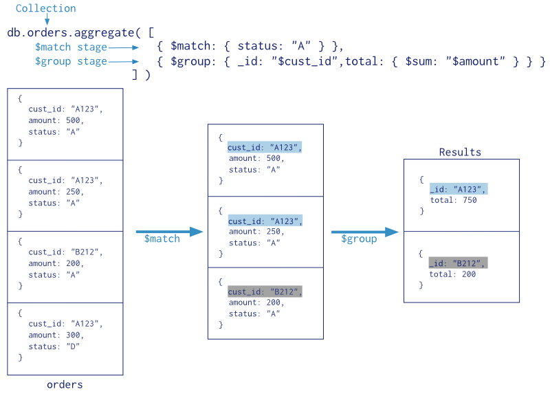
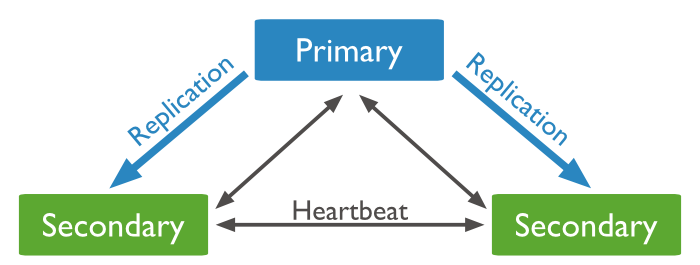

Was? Warum? Wie?
Über uns
| André Meier | Michael Rahn |
| } | |
MongoDB ...
- hochperformante
- schema-freie
- dokumentenorientierte
- hochverfügbare
- einfach zu skalierende
NoSQL Datenbank
http://uturncrossfit.com/wp-content/uploads/2014/04/wait-what.jpg
NoSQL?
Not only SQL
Nicht relationale Datenbanken

http://bibletech.kellerdavis.com/imgs/nosql-dbs.png
Verschiedene Typen
- Key/Value
- BigTable
- Document/Object
- Graph
Vorteile ggü. RDBMS
- Verarbeitung großer Datenmengen
- Speichern unstrukturierter Daten
- einfache, horizontale Skalierung
- Datenzugriff über APIs
- Keine JOINS
Warum MongoDB?
Einfache Installation
sudo apt-get install mongodb
brew install mongodb
Gute Dokumentation
Einsteigerfreundlich
http://docs.mongodb.org/ecosystem/drivers/Datenbank → Datenbank
> show dbs
dwx2014
local
system.indexes
> use dwx2014
switched to db dwx2014
Tables → Collections
> show collections
locations
tracks
users
...
> db.users.count()
1337
> db.users.find()
{_id: ObjectId("53b2cc2ece662e0000116e3a"), name: "Johnny", isSpeaker: false, ...}
{_id: ObjectId("53b4cc3ade662e0000117e3b"), name: "Jane", isSpeaker: true, ...}
...
Rows → Documents
{
_id: ObjectId("53b2cc2ece662e0000116e3a"),
name: "Johnny",
isSpeaker: false,
email: "Johnny@dwx2014.com"
}
Dokumenten basiert
{
_id: ObjectId("53b2cc2ece662e0000116e3a"),
name: "Johnny",
email: "johnny@dwx2014.com",
address: {
street: "Developerstr. 42",
zipcode: "12345",
city: "Developer City",
country: "Nowhere"
},
register_date: ISODate("2014-07-15"),
likes: 42,
dislikes: 0,
favorite_superheros: ["Thor", "Hulk", "Ironman"]
}
Dynamic Queries
Get all users
SELECT * FROM users
db.users.find()
Get user with name
SELECT * FROM users WHERE name = "Johnny"
db.users.find({name: "Johnny"})
Get first 5 users sort by name
SELECT TOP 5 * FROM users ORDER BY name
db.users.find().limit(5).sort({name:1})
Query Operators
$all $mod
$elemMatch $ne
$exists $nin
$gt $not
$gte $size
$lt $type
$lte $where
$in
Get users with >= 10 likes
db.users.find(likes: {$gte: 10})
Get users younger than 24
db.users.find(age: {$lt: 24})
Indexes
Ascending
db.users.ensureIndex({name: 1})
Descending
db.users.ensureIndex({age: -1})
Background - non blocking
db.users.ensureIndex({name: 1}, {background: true})
Index name: "name_1"
Index names
db.users.ensureIndex({name: 1}, {name: "indexName"})
Index name: "indexName"
Aggregation
http://docs.mongodb.org/manual/_images/aggregation-pipeline.png
Single Purpose Aggregation
Count
> db.users.count()
1337
> db.users.count({isSpeaker: true})
42
Distinct
> db.users.find()
{firstname: "Max", lastname: "Mustermann", age: "21"}
{firstname: "Michael", lastname: "Rahn", age: "27"}
{firstname: "Max", lastname: "Meier", age: "27"}
> db.users.distinct( "firstname" )
[ "Max", "Michael" ]
Group
|
|
Map/Reduce

http://docs.mongodb.org/manual/_images/map-reduce.png
Replication
Read/Write Default Routing

http://docs.mongodb.org/manual/_images/replica-set-read-write-operations-primary.png
Migration
http://docs.mongodb.org/manual/_images/replica-set-primary-with-two-secondaries.png
Failover

http://docs.mongodb.org/manual/_images/replica-set-trigger-election.png
Sharding

http://docs.mongodb.org/manual/_images/sharded-cluster-production-architecture.png